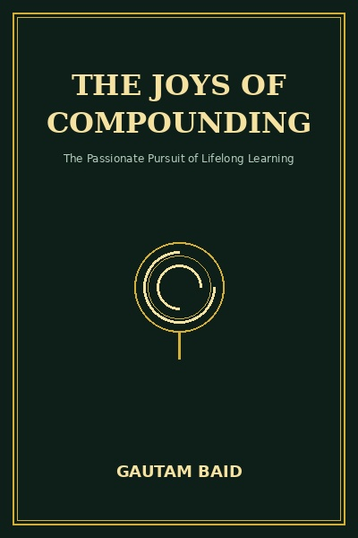

The Joys of Compounding
How mental models, deep humility, and the mathematics of compounding create enduring wealth.
READ FULL BREAKDOWN (FREE) →The Big Idea
Compounding is not merely a financial trick; it is the fundamental law of nature governing knowledge, reputation, habits, and capital. By combining Charlie Mungers multidisciplinary mental models with intellectual humility, an investor avoids unforced errors and lets time do the heavy compounding.
Key Lessons
The Multidisciplinary Mindset
Baid argues that the best investors do not study finance alone; they master mental models from biology, physics, microeconomics, and psychology.
The Power of Intellectual Humility
True wisdom begins with admitting what you do not know. Successful compounding requires staying within your circle of competence.
Inversion and Avoiding Unforced Errors
Instead of asking how to become brilliant, ask how to avoid stupidity. In investing, amateur matches are won by committing fewer unforced errors.
Asymmetric Risk and Margin of Safety
Risk is not volatility; risk is the permanent loss of capital. Compounding stops when capital hits zero.
The Art of Doing Nothing
Most investors feel compelled to act every time prices fluctuate. In reality, superior investment returns come from patient inactivity.
Character as an Unfair Advantage
Numbers on a spreadsheet can be manipulated; underlying character cannot. Partnering with ethical, candid owner-operators compounds wealth.
Avoiding Value Traps
A structurally decaying business trading at a low price-to-earnings multiple is a value trap. Superior compounding requires paying a fair price for an extraordinary business.
Compounding in Life and Relationships
Financial compounding is merely the visible arithmetic of life. Your reputation, trust, friendships, health, and knowledge compound on the identical curve.
The Graveyard Proves It
Baid emphasizes that ignoring debt and reckless capital allocation destroys compounding over time. See the real autopsy in our Startup Graveyard: Daewoo Case Study.